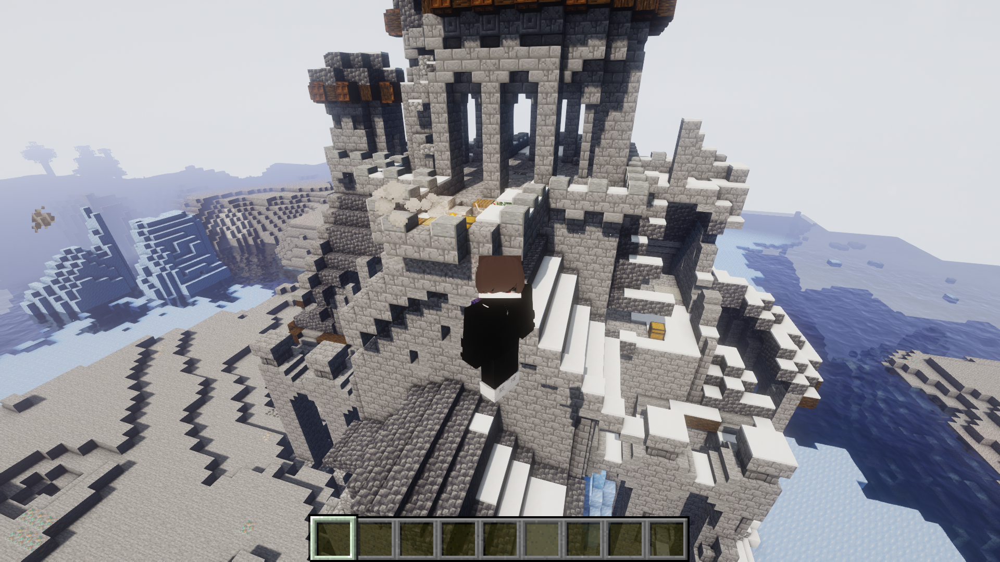
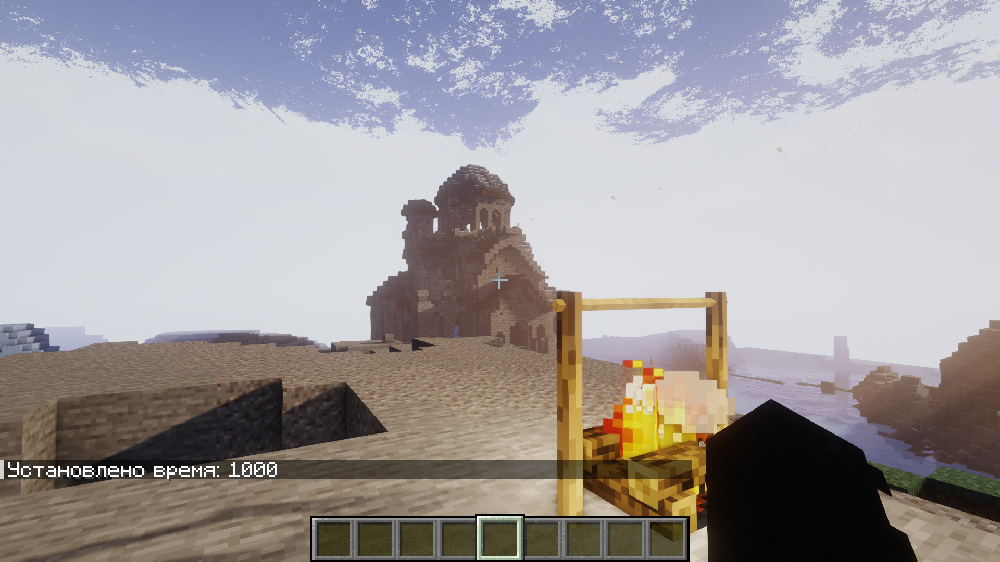
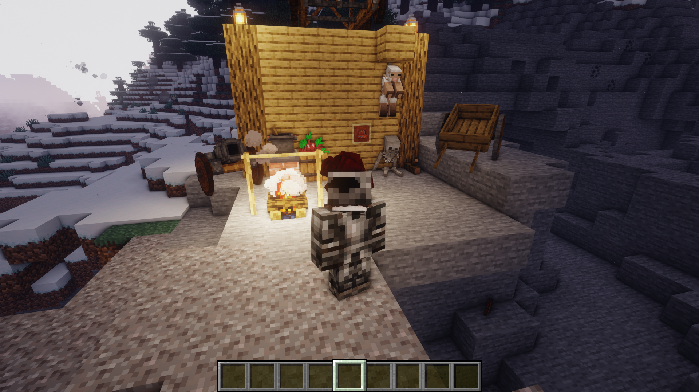

Галерея средневековья

Рыцарский замок

Корабли

Замок, другая перспектива

Доспехи
Замки, турниры, феодальные войны и древняя магия. Полное погружение в эпоху стали, веры и приключений.
Скачать сборку 1.0.1Полный набор латных доспехов (сталь, бронза, мифрил). Каждый сет даёт уникальные бонусы: устойчивость к топорам, скорость верхом или силу удара.
Система конных турниров, метание копья и бои на мечах. Зарабатывайте репутацию у лордов и получайте гербы.
Генерация полноценных замков с гарнизонами, подземельями и сокровищницами. Осадные орудия: тараны, катапульты.
Присоединяйтесь к гильдии охотников за головами, торговцев или алхимиков. Динамические квесты с наградами.
Графства, дремучие леса, вересковые пустоши, феодальные угодья. Уникальные деревни с профессиями.
Подземные склепы, заброшенные часовни, языческие капища — опасные данжи с уникальными артефактами.



✨ Особенности сборки: новая боевая механика, 25+ средневековых мобов, система гербов и флагов, реалистичная экономика. ✨
🎵 Шум ветра, пение птиц, звуки придворного менестреля, лязг мечей на турнире, крики глашатаев и отдаленный колокол. Полное звуковое погружение в эпоху.
Резные дубовые кровати, гобелены, канделябры, рыцарские знамёна — более 400 декоративных блоков для строительства замков и таверн.
Чума, голод и восстания. Новые механики выживания: болезни, требующие лечения у травников, и система морали поселенцев.
Разрушительные смерчи, меняющие ландшафт — неожиданная угроза даже для закалённых рыцарей.
❄️ Создатели мод-пака: LoVe_MoPS & BunkerKubika ❄️
Готовая сборка на Forge 1.20.1. Установка через любой лаунчер или вручную в папку mods.
Выберите удобный способ загрузки:
Официальные зеркала: ссылки ведут на актуальную версию 1.0.1
Версия 1.0.1 — полностью стабильна, совместима с шейдерами.
Если ссылки не работают, обратитесь к нам в сообщество — мы обновляем зеркала в день релиза.